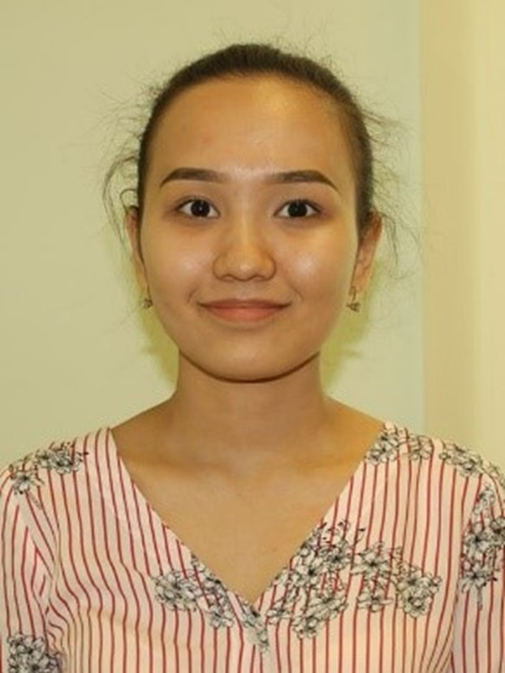

Nazarbayev University, School of Sciences and Humanities , Program: Bachelor of Science in Biological Sciences (2019- expected June 2023)
-
Science Writing course grade A-
-
Critical Research Reasoning course grade A-
-
General Chemistry II lab course grade A
-
Politics of Central Asia course grade A
- Introduction to macroeconomics A
National Academic Excellence Multi-Year Scholarship, 2019-current Nur-Sultan, Kazakhstan
Increased state cash scholarship for the Fall’2020 and Fall’2021
Dean’s list: Fall’2021, Spring'2022
Republican forum of health leaders "Focus on the challenges of the future", November,2022
-
16 hour advanced training on Design Thinking in Healthcare
-
Panel Session on Smart Technologies in Healthcare
Research Assistant at CoronaNet Research Project, June'2022- October'2022
- Collected govermental response data during Corona virus pandemics for all over the world
- Cleaned data records
- Ensured that only high quality data were collected
Visit Corona Net Research Project for detailed information, Corona Net Research Project
Research Assistant at prof. Yingqiu Xie laboratory, September'2022- October'2022
- Worked on Carbon dot nanoparticles project
- Wrote a part of grant proposal for the project
Member of the First Aid Department of NU Red Crescent Society 2020- current
- Certificate of Appreciation from the Department of Student Services (DSS) in recognition of outstanding contribution to the development of student life and raising the awareness of about First Aid among students
- Certificate of Appreciation from the Astana city branch of the Red Crescent Society of the Republic of Kazakhstan for volunteering in the international Red Cross movement December’2021
Mother tongue: Kazakh
Additional languages: Russian (C2) , English (C1)
| Digital Skills |
Score |
| Python |
7/10 |
| CITI training |
10/10 |
| Microsoft Office (Excel, Word, Power Point) |
9/10 |
| Web Development Basics: HTML, CSS, Javascript |
7/10 |